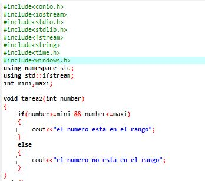
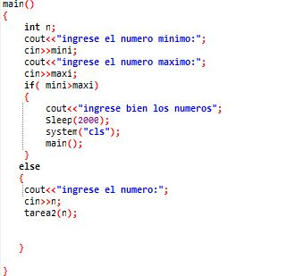

actvidad 2


los temas son muy buenos aunque me descepcione mucho la sitaucion de el grupo cada activida trato de poner lo mejor de mi para entregarlo en este caso me gusto mucho por que aunque requeria de pensamiento y logica gran parte fue realizada durante la clase de veerdad me esta gustando mucho que las actividades no sean muy largas por que nos queda mucho tiempo libre